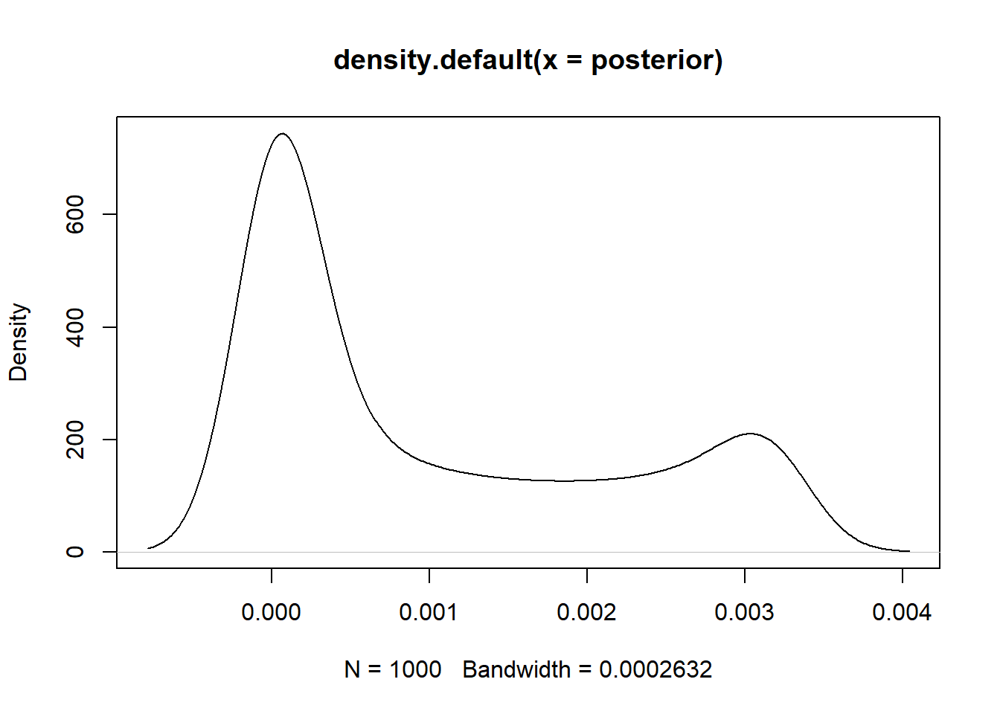

Chapter 3: Sampling the Imaginary
8/8/2020
1 Chapter 3: Sampling the Imaginary
Easy problems rely on the following code:
p_grid <- seq(from = 0, to = 1, length.out = 1000)
prior <- rep(1,1000)
likelihood <- dbinom(6, size = 9, prob = p_grid)
posterior <- likelihood * prior
posterior <- posterior / sum(posterior)
set.seed(100)
samples <- sample(p_grid, prob = posterior, size =1e4, replace = T)1.0.1 3E1.
Posterior probability that lies below \(p = 0.2\)
## [1] 0.00085609511.0.2 3E2
Posterior probability that lies above \(p = 0.8\)
## [1] 0.12034491.0.3 3E3
Posterior probability lies between \(p = 0.2\) and \(p = 0.8\)
## [1] 0.8881.0.4 3E4
20% of the posterior probability lies below \(p\) value of
## 20%
## 0.51851851.0.5 3E5
20% of the posterior probability lies above the \(p\) value of
## 80%
## 0.75575581.0.6 3E6
Values of \(p\) containing the narrowest interval equal to 66% of the posterior probability
## |0.66 0.66|
## 0.5085085 0.77377381.0.7 3E7
Values of \(p\) containing the interval with 66% of the posterior probability assuming equal posterior probability both below and above the interval
## 17% 83%
## 0.5025025 0.76976981.0.8 3M1
Posterior distribution of globe tossing problem using grid approximation using new data of 8 water in 15 tosses
p_grid <- seq(0,1,length.out = 1000)
prior <- rep(1,1000)
likelihood <- dbinom(x = 8, size = 15, prob = p_grid)
posterior <- prior * likelihood
posterior <- posterior / sum(posterior)
plot(density(posterior))